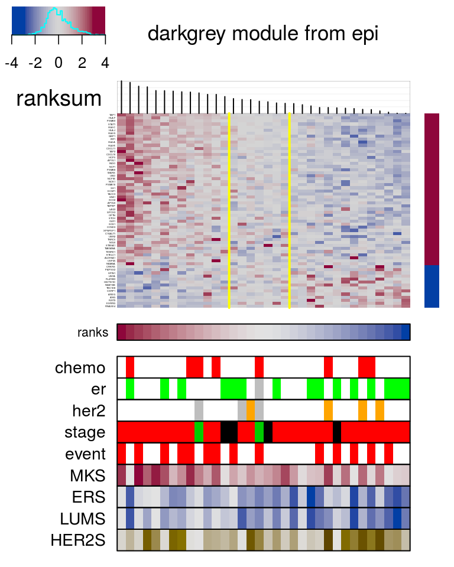
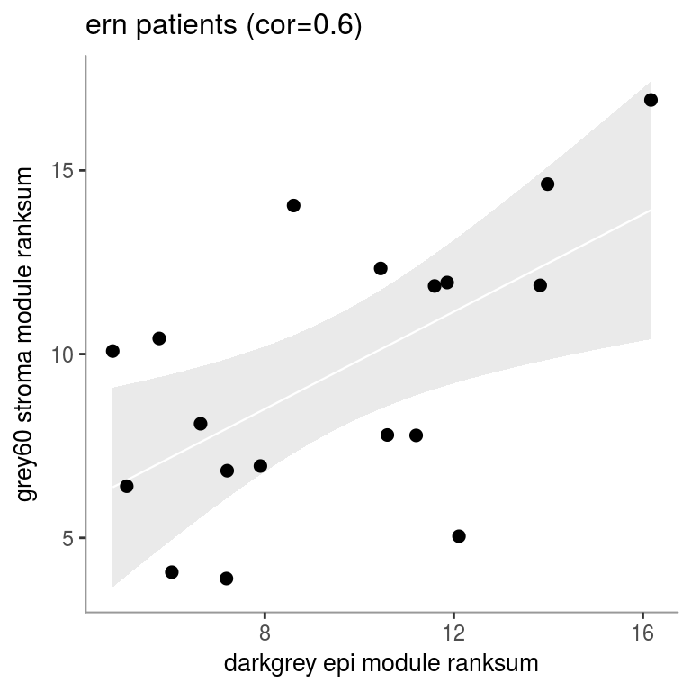
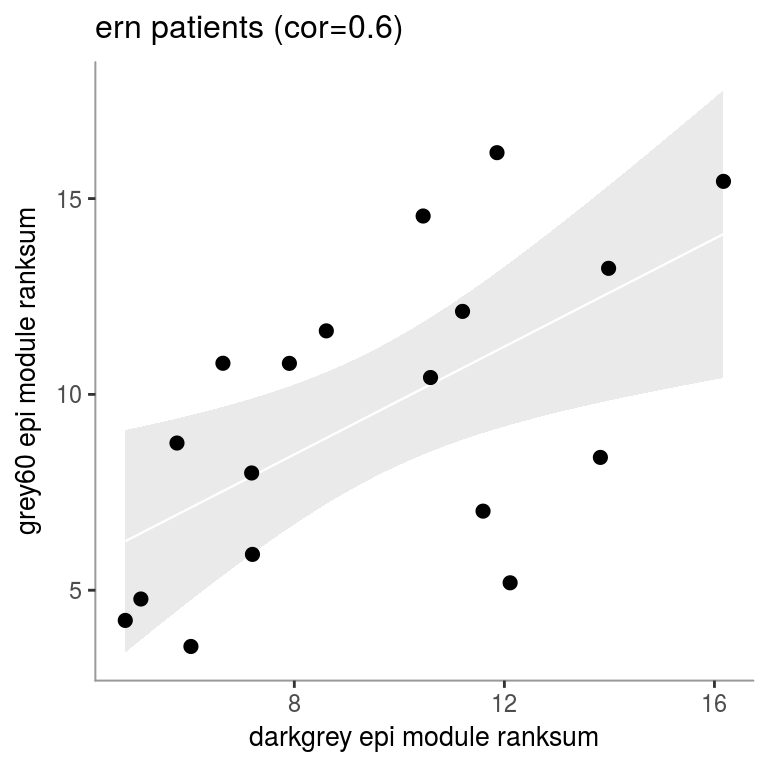
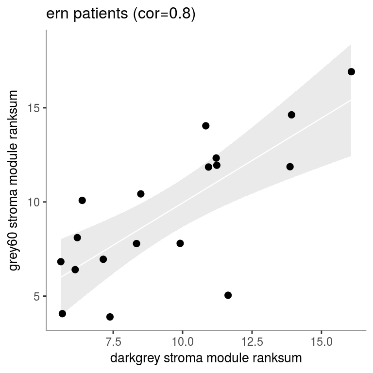
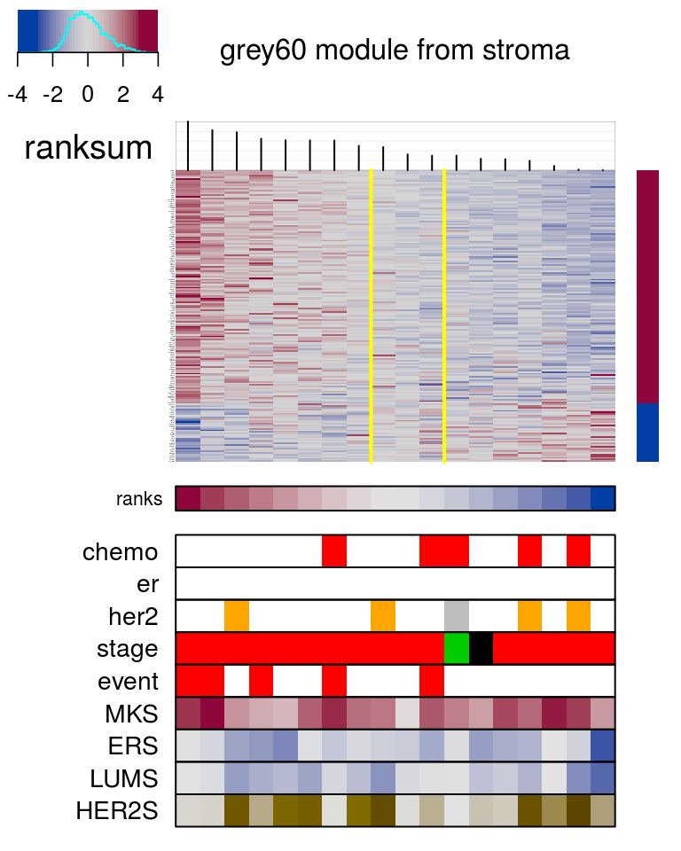
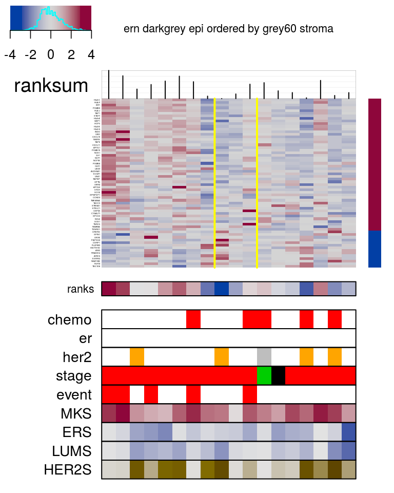
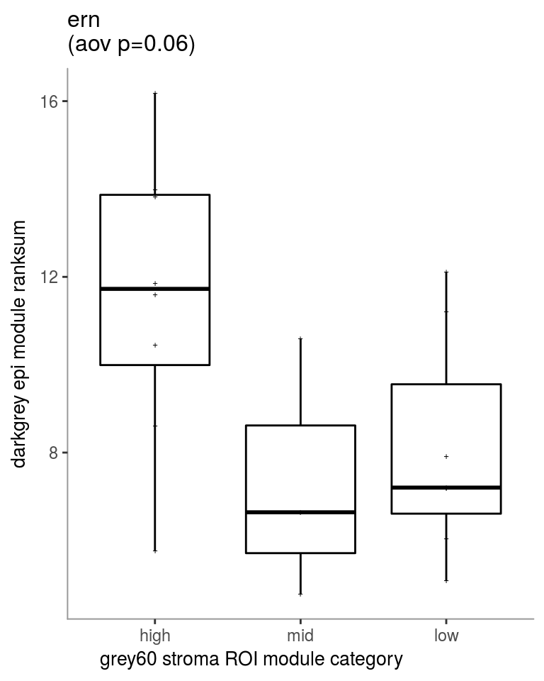

vignettes/Introduction-to-mixt.Rmd
Introduction-to-mixt.RmdThe mixtR package (Matched Interactions across Tissues) contains the computational and statistical methods for identifying and exploring associations between sets of genes or molecular processes across tissues.
The mixtR analysis requires gene expression profiles of two matched tissues and is based on two core functions: - sig.ranksum a function that maps samples to a linear ordering based on expression of a set of genes of interest - stat.ranksum a function that derives estimates of significance for association between gene sets of interest across tissues.
The mixtR package also offers ad-hoc plotting functions (cohort_heatmap, cohort_scatterplot, cohort_boxplot).
If the user wants to build a web application to explore/disseminate the results, the outputs should be saved in the /data folder of the R package as described below. Instructions to build the web application are described in the MIxT web application vignette.
First load the mixtR package in your R session.
library(mixtR)In this vignette, we are taking the example of gene expression profiles from microdissected epithelium and stroma from non-inflammatory invasive breast tumors from boersma et al.
files= c("dat.RData", "moduleColors.RData")
dataDir <- 'https://rawgit.com/vdumeaux/mixtData/master/data/'
files.dir=paste0(dataDir,files)
for(i in 1:length(files)){
load(url(files.dir[i]))
}Expression and clinical data from matched tissues were formatted so that they are contained in a list named dat.
Each object of the list must include the following objects: * exprs an expression matrix with m genes in rows and n patients in columns. Rownames of exprs are the same gene identifiers as the one used to define gene sets. * cohorts list of patients subgroups. If you have only one , the vector should still be present * clinical (optional) a clinical data frame with n patients in rows and clincal variables in columns. Categorical variables should be character or factors. Continuous variables should be numeric. * clinical.colors (optional) a clinical data frame with n patients in rows and clincal variables in columns coded by discrete or continuous color-coding. We recommend the colorspace R package that provides perceptually-based color palettes for coding categorical data (qualitative palettes) and numerical variables (sequential and diverging palettes).
str(dat)## List of 2
## $ epi :List of 4
## ..$ exprs : num [1:9473, 1:34] 6.12 11.65 5.54 7.55 8.31 ...
## .. ..- attr(*, "dimnames")=List of 2
## .. .. ..$ : chr [1:9473] "3.8-1" "A2M" "A4GALT" "AACS" ...
## .. .. ..$ : chr [1:34] "PID-1" "PID-2" "PID-4" "PID-5" ...
## ..$ clinical :'data.frame': 34 obs. of 9 variables:
## .. ..$ chemo: logi [1:34] FALSE FALSE FALSE FALSE FALSE FALSE ...
## .. ..$ er : logi [1:34] TRUE FALSE TRUE TRUE FALSE TRUE ...
## .. ..$ her2 : logi [1:34] FALSE FALSE FALSE FALSE FALSE FALSE ...
## .. ..$ stage: int [1:34] 1 2 1 2 2 2 2 2 2 2 ...
## .. ..$ event: logi [1:34] TRUE TRUE TRUE TRUE TRUE TRUE ...
## .. ..$ MKS : num [1:34] 5.84 6.7 5.61 5.45 7 ...
## .. ..$ ERS : num [1:34] 5.46 5.48 5.64 7.39 5.56 ...
## .. ..$ LUMS : num [1:34] 6.5 6.24 6.45 8.84 6.39 ...
## .. ..$ HER2S: num [1:34] 6.84 6.61 6.46 7.02 6.62 ...
## ..$ clinical.colors:'data.frame': 34 obs. of 9 variables:
## .. ..$ chemo: chr [1:34] "white" "white" "white" "white" ...
## .. ..$ er : chr [1:34] "green" "white" "green" "green" ...
## .. ..$ her2 : chr [1:34] "white" "white" "white" "white" ...
## .. ..$ stage: int [1:34] 1 2 1 2 2 2 2 2 2 2 ...
## .. ..$ event: chr [1:34] "red" "red" "red" "red" ...
## .. ..$ MKS : chr [1:34] "#CEA5AC" "#9C3450" "#DED3D4" "#E2E1E1" ...
## .. ..$ ERS : chr [1:34] "#E1E1E2" "#E0E0E1" "#B9BDD2" "#2146A4" ...
## .. ..$ LUMS : chr [1:34] "#CCCED9" "#E1E1E2" "#D0D1DB" "#2146A4" ...
## .. ..$ HER2S: chr [1:34] "#B2A580" "#D8D5CE" "#E2E2E2" "#917D31" ...
## ..$ cohorts :List of 3
## .. ..$ all: chr [1:34] "PID-1" "PID-2" "PID-4" "PID-5" ...
## .. ..$ erp: chr [1:15] "PID-1" "PID-4" "PID-5" "PID-7" ...
## .. ..$ ern: chr [1:18] "PID-2" "PID-6" "PID-12" "PID-11" ...
## $ stroma:List of 4
## ..$ exprs : num [1:9473, 1:34] 5.77 11.21 5.52 7.08 7.97 ...
## .. ..- attr(*, "dimnames")=List of 2
## .. .. ..$ : chr [1:9473] "3.8-1" "A2M" "A4GALT" "AACS" ...
## .. .. ..$ : chr [1:34] "PID-1" "PID-2" "PID-4" "PID-5" ...
## ..$ clinical :'data.frame': 34 obs. of 9 variables:
## .. ..$ chemo: logi [1:34] FALSE FALSE FALSE FALSE FALSE FALSE ...
## .. ..$ er : logi [1:34] TRUE FALSE TRUE TRUE FALSE TRUE ...
## .. ..$ her2 : logi [1:34] FALSE FALSE FALSE FALSE FALSE FALSE ...
## .. ..$ stage: int [1:34] 1 2 1 2 2 2 2 2 2 2 ...
## .. ..$ event: logi [1:34] TRUE TRUE TRUE TRUE TRUE TRUE ...
## .. ..$ MKS : num [1:34] 5.84 6.7 5.61 5.45 7 ...
## .. ..$ ERS : num [1:34] 5.46 5.48 5.64 7.39 5.56 ...
## .. ..$ LUMS : num [1:34] 6.5 6.24 6.45 8.84 6.39 ...
## .. ..$ HER2S: num [1:34] 6.84 6.61 6.46 7.02 6.62 ...
## ..$ clinical.colors:'data.frame': 34 obs. of 9 variables:
## .. ..$ chemo: chr [1:34] "white" "white" "white" "white" ...
## .. ..$ er : chr [1:34] "green" "white" "green" "green" ...
## .. ..$ her2 : chr [1:34] "white" "white" "white" "white" ...
## .. ..$ stage: int [1:34] 1 2 1 2 2 2 2 2 2 2 ...
## .. ..$ event: chr [1:34] "red" "red" "red" "red" ...
## .. ..$ MKS : chr [1:34] "#CEA5AC" "#9C3450" "#DED3D4" "#E2E1E1" ...
## .. ..$ ERS : chr [1:34] "#E1E1E2" "#E0E0E1" "#B9BDD2" "#2146A4" ...
## .. ..$ LUMS : chr [1:34] "#CCCED9" "#E1E1E2" "#D0D1DB" "#2146A4" ...
## .. ..$ HER2S: chr [1:34] "#B2A580" "#D8D5CE" "#E2E2E2" "#917D31" ...
## ..$ cohorts :List of 3
## .. ..$ all: chr [1:34] "PID-1" "PID-2" "PID-4" "PID-5" ...
## .. ..$ erp: chr [1:15] "PID-1" "PID-4" "PID-5" "PID-7" ...
## .. ..$ ern: chr [1:18] "PID-2" "PID-6" "PID-12" "PID-11" ...moduleColors is a list of length 2: each object is a named vector of gene set appartenance for each tissue. In our example, each gene is part of a module grouping strongly co-expressed genes together as computed by WGCNA R package. It could be groups of genes involved in different pathways/molecular processes.
str(moduleColors)## List of 2
## $ epi : Named chr [1:9461] "darkgrey" "black" "salmon" "darkolivegreen" ...
## ..- attr(*, "names")= chr [1:9461] "3.8-1" "A2M" "A4GALT" "AACS" ...
## $ stroma: Named chr [1:9453] "darkgrey" "black" "cyan" "turquoise" ...
## ..- attr(*, "names")= chr [1:9453] "3.8-1" "A2M" "A4GALT" "AACS" ...You can import the top node and edges for each netwrok that you can vizualize in Cytoscape or in the MIxT web application
load(url("https://rawgit.com/vdumeaux/mixtData/master/data/TOM_net.RData"))
str(TOM_net)## List of 2
## $ epi :List of 2
## ..$ edgeData:'data.frame': 111137 obs. of 6 variables:
## .. ..$ fromNode : Factor w/ 1729 levels "A2M","AACS","AASS",..: 1 1 1 1 1 1 1 1 1 1 ...
## .. ..$ toNode : Factor w/ 1777 levels "ACRV1","ACSBG2",..: 5 27 104 244 263 364 393 437 451 453 ...
## .. ..$ weight : num [1:111137] 0.103 0.105 0.113 0.105 0.118 ...
## .. ..$ direction : Factor w/ 1 level "undirected": 1 1 1 1 1 1 1 1 1 1 ...
## .. ..$ fromAltName: Factor w/ 1 level "NA": 1 1 1 1 1 1 1 1 1 1 ...
## .. ..$ toAltName : Factor w/ 1 level "NA": 1 1 1 1 1 1 1 1 1 1 ...
## ..$ nodeData:'data.frame': 1931 obs. of 3 variables:
## .. ..$ nodeName : Factor w/ 1931 levels "A2M","AACS","AASS",..: 1 2 3 4 5 6 7 8 9 10 ...
## .. ..$ altName : Factor w/ 1 level "NA": 1 1 1 1 1 1 1 1 1 1 ...
## .. ..$ nodeAttr.nodesPresent...: Factor w/ 23 levels "black","blue",..: 1 6 1 2 20 1 1 1 20 1 ...
## $ stroma:List of 2
## ..$ edgeData:'data.frame': 140306 obs. of 6 variables:
## .. ..$ fromNode : Factor w/ 1659 levels "A2M","AARSD1",..: 1 1 1 2 2 2 2 2 2 2 ...
## .. ..$ toNode : Factor w/ 1716 levels "ABLIM1","ACRV1",..: 549 732 836 80 172 186 252 548 1097 1378 ...
## .. ..$ weight : num [1:140306] 0.103 0.107 0.109 0.105 0.102 ...
## .. ..$ direction : Factor w/ 1 level "undirected": 1 1 1 1 1 1 1 1 1 1 ...
## .. ..$ fromAltName: Factor w/ 1 level "NA": 1 1 1 1 1 1 1 1 1 1 ...
## .. ..$ toAltName : Factor w/ 1 level "NA": 1 1 1 1 1 1 1 1 1 1 ...
## ..$ nodeData:'data.frame': 1865 obs. of 3 variables:
## .. ..$ nodeName : Factor w/ 1865 levels "A2M","AARSD1",..: 1 2 3 4 5 6 7 8 9 10 ...
## .. ..$ altName : Factor w/ 1 level "NA": 1 1 1 1 1 1 1 1 1 1 ...
## .. ..$ nodeAttr.nodesPresent...: Factor w/ 21 levels "black","blue",..: 1 19 19 12 19 19 19 19 1 12 ...sig.ranksum() allows you to map 𝑛 samples to a linear ordering based on expression of 𝑘 genes within a given gene se
If you know the directionality of gene expression, the gene set of interest can be split between the up and dn genes. If you do not know the directionality of gene expression, all genes in the gene set are listed in the ns. In this case, genes will be partitioned into two groups around myeloids using correlation as the distance metric.
The patient ordering is then partition in three categories (high, mid, low) following a random sampling procedure (n =10,000). By default, the region of independence (ROI) is determined by the 0.025 and 0.975 percentile point of the distribution of random patient ranks (middle.range = 0.95).Both n and middle.range can be set differently.
gene.sets <- lapply(moduleColors, function(x.moduleColors){
split(names(x.moduleColors), factor(x.moduleColors))
})
str(gene.sets)## List of 2
## $ epi :List of 23
## ..$ black : chr [1:1438] "A2M" "AARS" "AASS" "AATF" ...
## ..$ blue : chr [1:710] "ABCA1" "ABCD4" "ABR" "ACAA2" ...
## ..$ cyan : chr [1:211] "AAMP" "ADIPOR1" "AGA" "AGL" ...
## ..$ darkgreen : chr [1:295] "ABCC3" "ADAM19" "ADRM1" "AHCY" ...
## ..$ darkgrey : chr [1:64] "3.8-1" "ALDH5A1" "ANG" "APOL1" ...
## ..$ darkolivegreen: chr [1:433] "AACS" "ABCC5" "ABHD11" "ACD" ...
## ..$ darkorange : chr [1:55] "ACACA" "APEH" "ATOX1" "BNIP3" ...
## ..$ darkred : chr [1:165] "ADAR" "ADNP2" "AGBL5" "AGPAT1" ...
## ..$ darkturquoise : chr [1:106] "APOBEC3A" "APOBEC3G" "APOL2" "ASPH" ...
## ..$ green : chr [1:902] "ABCE1" "ABCF1" "ABLIM3" "ACAT2" ...
## ..$ greenyellow : chr [1:142] "ADAT1" "ADORA2A" "AHNAK" "AIM2" ...
## ..$ grey60 : chr [1:191] "ACSL5" "ADAM28" "ALDH2" "APOL3" ...
## ..$ midnightblue : chr [1:380] "ABAT" "ACADSB" "ACOT8" "ACOX2" ...
## ..$ paleturquoise : chr [1:175] "ANP32B" "AP3D1" "APP" "APTX" ...
## ..$ pink : chr [1:280] "ABCA3" "ABCC4" "AFTPH" "ALG13" ...
## ..$ saddlebrown : chr [1:139] "ADK" "ADSL" "ALDH8A1" "ARFGAP1" ...
## ..$ salmon : chr [1:296] "A4GALT" "ABCC6" "ABHD4" "ACTL8" ...
## ..$ steelblue : chr [1:119] "ACLY" "ADSS" "AKAP1" "ALDH18A1" ...
## ..$ tan : chr [1:587] "AARSD1" "ABCC1" "ABCD3" "ABHD2" ...
## ..$ turquoise : chr [1:1795] "ABCA11" "ABCA12" "ABCA4" "ABCD1" ...
## ..$ violet : chr [1:586] "AASDHPPT" "ABCB4" "ABCC10" "ABCG1" ...
## ..$ white : chr [1:130] "ACE2" "AMD1" "ANXA3" "ANXA8L2" ...
## ..$ yellow : chr [1:262] "ABCB7" "ADCK2" "AKAP13" "AKR1A1" ...
## $ stroma:List of 21
## ..$ black : chr [1:1507] "A2M" "AARS" "AASS" "ABCA6" ...
## ..$ blue : chr [1:706] "ABCC1" "ABCC10" "ABR" "ACADVL" ...
## ..$ cyan : chr [1:734] "A4GALT" "AASDHPPT" "ABCB4" "ABHD14A" ...
## ..$ darkgreen : chr [1:304] "AAMP" "ACOT8" "ACY1" "ADAM17" ...
## ..$ darkgrey : chr [1:91] "3.8-1" "ABCF1" "AK3L1" "AKAP10" ...
## ..$ darkorange : chr [1:263] "ADRM1" "AGRN" "AMH" "ANKRD27" ...
## ..$ darkred : chr [1:145] "AATF" "ADM" "AHSA1" "AKAP1" ...
## ..$ darkturquoise: chr [1:92] "ADAR" "APOBEC3A" "APOL2" "ASS1" ...
## ..$ green : chr [1:498] "ABCE1" "ACAT2" "ACOX2" "ACP1" ...
## ..$ greenyellow : chr [1:297] "ABCA12" "ACAT1" "ACSM1" "ADORA2A" ...
## ..$ grey60 : chr [1:180] "ABP1" "ADAM28" "AIM2" "ALG9" ...
## ..$ lightcyan : chr [1:185] "ABCA11" "ABCA8" "ABCB7" "ABLIM3" ...
## ..$ midnightblue : chr [1:597] "ABCA1" "ABCC6" "ABCD3" "ABCD4" ...
## ..$ orange : chr [1:87] "ADAMTS1" "ADAMTS9" "ANXA1" "APOLD1" ...
## ..$ pink : chr [1:396] "ABCA3" "ACTN1" "ACVR1" "ACYP2" ...
## ..$ royalblue : chr [1:148] "ABCA5" "ABHD3" "ADCY9" "ADD1" ...
## ..$ salmon : chr [1:268] "ABCA7" "ACIN1" "ACOX1" "ANAPC13" ...
## ..$ tan : chr [1:294] "ABAT" "ABHD2" "ACADM" "ACOT9" ...
## ..$ turquoise : chr [1:2021] "AACS" "AARSD1" "ABCA4" "ABCC5" ...
## ..$ white : chr [1:66] "ANXA3" "ANXA8L2" "ARSE" "BBOX1" ...
## ..$ yellow : chr [1:574] "ABCC4" "ACAD8" "ACADS" "ADM2" ...## compute ranksum for each gene sets in each tissue
bresat <- list()
bresat$epi <- lapply(gene.sets$epi, function (mod){
sig.ranksum (x.dat = dat$epi,
ns = which(rownames(dat$epi$exprs) %in% mod),
n=10000, mc.cores = 2)})
bresat$stroma <- lapply(gene.sets$stroma, function (mod){
sig.ranksum (x.dat = dat$stroma,
ns = which(rownames(dat$stroma$exprs) %in% mod),
n=10000, mc.cores = 2)})names(bresat$epi)## [1] "black" "blue" "cyan" "darkgreen"
## [5] "darkgrey" "darkolivegreen" "darkorange" "darkred"
## [9] "darkturquoise" "green" "greenyellow" "grey60"
## [13] "midnightblue" "paleturquoise" "pink" "saddlebrown"
## [17] "salmon" "steelblue" "tan" "turquoise"
## [21] "violet" "white" "yellow"str(bresat$epi$blue)## List of 3
## $ all:List of 11
## ..$ pat.order : int [1:34] 1 18 16 26 3 19 5 14 29 9 ...
## ..$ ranksum : Named num [1:34] 31.7 20.5 23.7 10.8 21.7 ...
## .. ..- attr(*, "names")= chr [1:34] "PID-1" "PID-2" "PID-4" "PID-5" ...
## ..$ gene.order: int [1:710] 7569 1405 3586 1037 6219 4113 2040 4806 4450 5415 ...
## ..$ dat : num [1:710, 1:34] 8.41 9.18 8.8 8.73 10.12 ...
## .. ..- attr(*, "dimnames")=List of 2
## .. .. ..$ : chr [1:710] "SLAMF8" "CD163" "HCK" "C1QA" ...
## .. .. ..$ : chr [1:34] "PID-1" "PID-17" "PID-33" "PID-25" ...
## ..$ up.dn : num [1:710] 1 1 1 1 1 1 1 1 1 1 ...
## ..$ up : int [1:499] 12 33 52 55 62 64 73 83 84 89 ...
## ..$ dn : int [1:211] 90 293 304 321 354 543 623 639 645 680 ...
## ..$ up.cor : num [1:499] 0.736 0.4961 0.5642 0.0356 0.3445 ...
## ..$ dn.cor : num [1:211] 0.55 0.457 0.489 0.544 0.676 ...
## ..$ roi : int [1:35] 0 0 0 0 0 0 0 0 0 0 ...
## ..$ roi.cat : num [1:34] 3 3 3 1 3 1 1 1 3 1 ...
## $ erp:List of 11
## ..$ pat.order : int [1:15] 1 10 9 2 6 15 14 8 7 5 ...
## ..$ ranksum : Named num [1:15] 13.96 10.25 4.92 5.35 6.3 ...
## .. ..- attr(*, "names")= chr [1:15] "PID-1" "PID-4" "PID-5" "PID-7" ...
## ..$ gene.order: int [1:710] 719 8830 8711 5411 5133 2730 1038 390 6219 4493 ...
## ..$ dat : num [1:710, 1:15] 7.4 11.1 9.16 10.54 9.23 ...
## .. ..- attr(*, "dimnames")=List of 2
## .. .. ..$ : chr [1:710] "BCL2A1" "TYROBP" "TRPV2" "NCF2" ...
## .. .. ..$ : chr [1:15] "PID-1" "PID-17" "PID-33" "PID-4" ...
## ..$ up.dn : num [1:710] 1 1 1 1 1 1 1 1 1 1 ...
## ..$ up : int [1:500] 12 33 52 55 62 64 73 83 84 89 ...
## ..$ dn : int [1:210] 90 293 304 321 354 543 623 639 645 680 ...
## ..$ up.cor : num [1:500] 0.807 0.454 0.425 0.136 0.604 ...
## ..$ dn.cor : num [1:210] 0.504 0.557 0.629 0.55 0.614 ...
## ..$ roi : int [1:16] 0 0 0 0 0 0 0 0 0 10000 ...
## ..$ roi.cat : num [1:15] 3 3 1 1 1 3 1 1 3 3 ...
## $ ern:List of 11
## ..$ pat.order : int [1:18] 11 8 13 2 1 5 18 4 15 16 ...
## ..$ ranksum : Named num [1:18] 11.72 11.73 7.78 10.89 11.67 ...
## .. ..- attr(*, "names")= chr [1:18] "PID-2" "PID-6" "PID-12" "PID-11" ...
## ..$ gene.order: int [1:710] 1405 4806 5415 4544 1439 3976 3143 9123 5235 4113 ...
## ..$ dat : num [1:710, 1:18] 9.31 11.18 7.63 6.42 6.96 ...
## .. ..- attr(*, "dimnames")=List of 2
## .. .. ..$ : chr [1:710] "CD163" "LYZ" "NCKAP1L" "LILRB2" ...
## .. .. ..$ : chr [1:18] "PID-25" "PID-18" "PID-34" "PID-6" ...
## ..$ up.dn : num [1:710] 1 1 1 1 1 1 1 1 1 1 ...
## ..$ up : int [1:447] 12 33 52 64 73 83 84 91 105 120 ...
## ..$ dn : int [1:263] 55 62 89 90 117 293 304 321 354 381 ...
## ..$ up.cor : num [1:447] 0.6512 0.6388 0.711 0.0939 0.2074 ...
## ..$ dn.cor : num [1:263] 0.1166 -0.0134 0.4757 0.6533 -0.0155 ...
## ..$ roi : int [1:19] 0 0 0 0 0 0 0 0 7360 2640 ...
## ..$ roi.cat : num [1:18] 3 3 1 3 3 1 1 3 1 1 ...You can plot heatmap of a given gene set expressed in a given tissue and reordered by the output of sig.ranksum().
cohort_heatmap(mixt.dat = dat, mixt.ranksum = bresat, tissue = "epi",
module = "darkgrey", cohort.name = "all", cl.height = 3)
The MSigDB database from the Broad institute provides multiple collections of gene sets that can be used to functionally annotate the transcriptional modules.
MSigDB cannot be accessed without a free registration, so the first things you’ll need to do is download the .gmt files using the MSigDB page and save it in a folder within yoru working directory named extdata for example.
read.gmt.msigdb() will import your .gmt files in your working environment as follow
msigdb.files <- c("c1.all", "h.all", "c2.cp", "c2.cgp", "c5.all", "c6.all",
"c7.all")
msigdb <- list()
msigdb <- lapply(msigdb.files, function(p) {
input.file <- file.path("../../extdata", paste0(p, ".v5.2.symbols.gmt"))
ret <- read.gmt.msigdb(input.file)
return(ret)
})
names(msigdb) <- msigdb.filesWe choose to use the hallmark (h), poistional (c1) and curated (c2) gene set collections.
sig<-list()
sig$all.sig<-c(msigdb$h.all, msigdb$c1.all, msigdb$c2.cp, msigdb$c2.cgp)
sig$set<-c(rep("h", length(msigdb$h.all)),
rep("c1", length(msigdb$c1.all))
, rep("c2.cp", length(msigdb$c2.cp)),
rep("c2.cgp", length(msigdb$c2.cgp)))
msigdb_enrichment <- list()
msigdb_enrichment$epi<- functional.enrichment(mixt.ranksum = bresat,
tissue="epi",
cohort.name = "ern",
functional.groups = sig,
p.adjust.method = "BH",
mc.cores=80)
msigdb_enrichment$stroma<- functional.enrichment(mixt.ranksum = bresat,
tissue="stroma",
cohort.name = "ern",
functional.groups = sig,
p.adjust.method = "BH",
mc.cores=80)library(plyr)
tissue.names<-c("epi", "stroma")
set<-levels(factor(msigdb_enrichment$epi$turquoise$results$sig.set))
results<-list()
for (tissue in tissue.names){
results[[tissue]]<-lapply(msigdb_enrichment[[tissue]], function(x) x$results)
}
msig.results<-list()
msig.results<-sapply(tissue.names, function(tissue) {
ret <- lapply(names(results[[tissue]]), function(mod) {
res<-do.call(rbind, lapply(set, function(s){
x<-results[[tissue]][[mod]][results[[tissue]][[mod]]$sig.set==s,]
x<-cbind(data.frame(name=rownames(x)), x)
top.5<-x[order(as.numeric(as.character(x$updn.pval)), decreasing=F),][1:5,]}))
})
names(ret)<-names(results[[tissue]])
return(ret)
}, simplify=F)
epi.msig<-ldply(msig.results$epi)
stroma.msig<-ldply(msig.results$stroma)
knitr::kable(epi.msig[1:6,])| .id | name | sig.set | sig.size | updn.common | updn.pval | up.common | up.pval | dn.common | dn.pval |
|---|---|---|---|---|---|---|---|---|---|
| black | chr17q25 | c1 | 78 | 22 | 0.0277820272605066 | 3 | 1 | 19 | 0.000270500088377426 |
| black | chr2q32 | c1 | 19 | 8 | 0.0433681059207274 | 7 | 0.010963561782516 | 1 | 1 |
| black | chr5p15 | c1 | 28 | 9 | 0.129887739539366 | 4 | 0.663248168643492 | 5 | 0.756451801369092 |
| black | chr5q | c1 | 5 | 3 | 0.165133210864193 | 3 | 0.0461457585820125 | 0 | 1 |
| black | chr11q12 | c1 | 49 | 13 | 0.175590118797735 | 2 | 1 | 11 | 0.0397575262064447 |
| black | SCHUETZ_BREAST_CANCER_DUCTAL_INVASIVE_UP | c2.cgp | 335 | 183 | 3.02419924062287e-61 | 183 | 1.07409811588174e-97 | 0 | 1 |
knitr::kable(stroma.msig[1:6,])| .id | name | sig.set | sig.size | updn.common | updn.pval | up.common | up.pval | dn.common | dn.pval |
|---|---|---|---|---|---|---|---|---|---|
| black | chr7p13 | c1 | 18 | 8 | 0.0898171152669901 | 3 | 0.791436091301745 | 5 | 0.275435149832975 |
| black | chr9p24 | c1 | 17 | 7 | 0.173716813002666 | 5 | 0.176327132949814 | 2 | 1 |
| black | chr7q31 | c1 | 39 | 12 | 0.205850722424551 | 11 | 0.0207604326983022 | 1 | 1 |
| black | chr17q25 | c1 | 78 | 20 | 0.230751582351434 | 3 | 1 | 17 | 0.00346900028672407 |
| black | chr14q13 | c1 | 11 | 5 | 0.245931799726871 | 5 | 0.0392594642649441 | 0 | 1 |
| black | SWEET_LUNG_CANCER_KRAS_DN | c2.cgp | 316 | 133 | 6.75526042336947e-26 | 126 | 6.92217507816109e-43 | 7 | 1 |
We also annotate gene sets/modules based on gene ontology (GO) enrichment, for example using the R topGO package.
library(topGO)
library(org.Hs.eg.db)
library(plyr)
bckg.genes <- rownames(dat[[1]]$exprs)
xx <- annFUN.org("BP", mapping = "org.Hs.eg.db", ID = "symbol")
head(xx)
xx <- unique(unlist(xx))
xx<-xx[xx %in% bckg.genes]
goterms <- NULL
goterms <- lapply(tissue.names, function (tissue){
ret <- lapply(names(gene.sets[[tissue]]), function(mod) {
gene.list <- gene.sets[[tissue]][[mod]]
gene.list.2 <- ifelse(xx %in% gene.list, 1, 0)
gene.list.2 <- factor(gene.list.2)
names(gene.list.2) <- xx
GO.genes <- new("topGOdata",
ontology = "BP",
allGenes = gene.list.2,
nodeSize = 5,
annot = annFUN.org,
mapping = "org.Hs.eg.db",
ID = "symbol")
resultFisher <- runTest(GO.genes, algorithm = "classic",
statistic = "fisher")
weight01Fisher <- runTest(GO.genes, statistic = "fisher")
allRes <- GenTable(GO.genes, classicFisher = resultFisher,
weight01Fisher= weight01Fisher,
orderBy = "weight01Fisher",
topNodes=length(usedGO(GO.genes)), numChar = 1000)
allRes <- subset(allRes, classicFisher != "1.00000")
gt <- genesInTerm(GO.genes, allRes$GO.ID)
mod.genes <- gene.sets[[tissue]][[mod]]
common<-lapply(gt, function(sig) intersect(mod.genes, sig))
results <- list(GO.table = allRes,
common = common)
return(results)
})
names(ret) <- names(gene.sets[[tissue]])
return(ret)
})
names(goterms) <- tissue.names
goterms.table <- list()
for (tissue in c("epi", "stroma")){
goterms.table[[tissue]] <- lapply(goterms[[tissue]], "[[", "GO.table")
goterms.table[[tissue]] <- lapply(goterms.table[[tissue]], function(x){
dplyr::slice(x, 1:20)})
}
epi.goterms<-ldply(goterms.table$epi)
stroma.goterms<-ldply(goterms.table$stroma)Using ranksums to capture module expression, we can ask how gene sets/modules in each tissue are differentially expressed according to patient’s clinicopathological variables. The type of the clinicopathological attribute (categorical or continuous) determines the underlying statistical test. Pearson correlation (Student asymptotic p-value) is used to test association between between a given module and continuous patient attributes (eg. age). Analysis of Variance (ANOVA) is used to test association between a given module and categorical patient attributes (eg. ER status).
epi.clinical.assoc <- lapply(names(dat$epi$cohorts), function(cohort.name) {
clinical.ranksum(mixt.dat = dat,
mixt.ranksum = bresat,
tissue="epi", cohort = cohort.name,
nRuns = 10000, mc.cores = 80)
})
names(epi.clinical.assoc) <- names(dat$epi$cohorts)
knitr::kable(epi.clinical.assoc$ern[, 1:6])
stroma.clinical.assoc <- lapply(names(dat$stroma$cohorts), function(cohort.name) {
clinical.ranksum(mixt.dat = dat,
mixt.ranksum = bresat,
tissue="stroma", cohort=cohort.name,
nRuns = 10000, mc.cores = 80)
})
names(stroma.clinical.assoc) <- names(dat$stroma$cohorts)
knitr::kable(stroma.clinical.assoc$all[, 1:6])
## Adjust for mutliple testing
emp.p <- list()
emp.p <- NULL
for (cohort.name in names(dat$epi$cohorts)){
emp.p[[cohort.name]] <- cbind(epi.clinical.assoc[[cohort.name]], stroma.clinical.assoc[[cohort.name]])
}
### Families of tests
group1 <- c("her2", "HER2S")
group2 <- c("er", "LUMS", "ERS")
singles <- rownames(emp.p$all)[!rownames(emp.p$all) %in% c(group1, group2) ]
gp <- list(group1, group2)
mod_clinical_fdr <- NULL
mod_clinical_fdr <- lapply(emp.p, function(p.dat){
ret <- do.call(rbind, lapply(gp, function(gpx) {
matrix(p.adjust(p.dat[rownames(p.dat) %in% gpx, ], method="BH"),
nrow=length(which(rownames(p.dat) %in% gpx)),
ncol = ncol(p.dat),
dimnames = list(rownames(p.dat)[rownames(p.dat) %in% gpx], colnames(p.dat))
)
}))
ret <- rbind(ret, t(apply(p.dat[rownames(p.dat) %in% singles, ], 1, p.adjust, method="BH")))
return(ret)
})
mod_clinical_fdr <- lapply(mod_clinical_fdr, function(val){
return(list(epi=val[, 1:23], stroma=val[,24:44]))
})str(mod_clinical_fdr)## List of 3
## $ all:List of 2
## ..$ epi : num [1:9, 1:23] 0.615 0.429 0.838 0.693 0.282 ...
## .. ..- attr(*, "dimnames")=List of 2
## .. .. ..$ : chr [1:9] "her2" "HER2S" "er" "ERS" ...
## .. .. ..$ : chr [1:23] "black" "blue" "cyan" "darkgreen" ...
## ..$ stroma: num [1:9, 1:21] 0.862 0.862 0.353 0.625 0.878 ...
## .. ..- attr(*, "dimnames")=List of 2
## .. .. ..$ : chr [1:9] "her2" "HER2S" "er" "ERS" ...
## .. .. ..$ : chr [1:21] "black" "blue" "cyan" "darkgreen" ...
## $ erp:List of 2
## ..$ epi : num [1:7, 1:23] 0.7781 0.2617 0.1265 0.9873 0.0295 ...
## .. ..- attr(*, "dimnames")=List of 2
## .. .. ..$ : chr [1:7] "HER2S" "ERS" "LUMS" "chemo" ...
## .. .. ..$ : chr [1:23] "black" "blue" "cyan" "darkgreen" ...
## ..$ stroma: num [1:7, 1:21] 0.931 1 0.676 0.987 0.364 ...
## .. ..- attr(*, "dimnames")=List of 2
## .. .. ..$ : chr [1:7] "HER2S" "ERS" "LUMS" "chemo" ...
## .. .. ..$ : chr [1:21] "black" "blue" "cyan" "darkgreen" ...
## $ ern:List of 2
## ..$ epi : num [1:8, 1:23] 0.703 0.481 0.769 0.717 0.844 ...
## .. ..- attr(*, "dimnames")=List of 2
## .. .. ..$ : chr [1:8] "her2" "HER2S" "ERS" "LUMS" ...
## .. .. ..$ : chr [1:23] "black" "blue" "cyan" "darkgreen" ...
## ..$ stroma: num [1:8, 1:21] 0.893 0.892 0.945 0.945 0.844 ...
## .. ..- attr(*, "dimnames")=List of 2
## .. .. ..$ : chr [1:8] "her2" "HER2S" "ERS" "LUMS" ...
## .. .. ..$ : chr [1:21] "black" "blue" "cyan" "darkgreen" ...head(mod_clinical_fdr$all)## $epi
## black blue cyan darkgreen darkgrey darkolivegreen
## her2 0.61549381 0.5460737 0.42892710 0.9218922 0.54685469 0.42892710
## HER2S 0.42892710 0.5780418 0.20902090 0.9218922 0.71847185 0.24290429
## er 0.83753767 0.8452259 0.26440358 0.9872987 0.23348604 0.96122112
## ERS 0.69319873 0.0345564 0.90565420 0.2339886 0.05313531 0.11119573
## LUMS 0.28150421 0.0120012 0.80515942 0.1363336 0.02895773 0.01320132
## chemo 0.93775693 0.9377569 0.93775693 0.9377569 0.93775693 0.93775693
## stage 0.54334957 0.3491016 0.72431243 0.5433496 0.76817411 0.37403740
## event 0.90447902 0.9044790 0.90447902 0.9373937 0.90447902 0.90447902
## MKS 0.02510839 0.6903662 0.01210121 0.3359003 0.03798275 0.46707528
## darkorange darkred darkturquoise green greenyellow
## her2 0.42892710 0.87456881 0.6383388 0.458085809 0.96300714
## HER2S 0.20902090 0.96300714 0.8622907 0.428927103 0.92895605
## er 0.54383369 0.68924092 0.6892409 0.006948063 0.12687935
## ERS 0.28898232 0.39072688 0.6941587 0.006600660 0.08718372
## LUMS 0.06820682 0.34062880 0.5927393 0.034556397 0.18879983
## chemo 0.85808581 0.93775693 0.9377569 0.937756934 0.93775693
## stage 0.34910158 0.34910158 0.7484873 0.592528818 0.54334957
## event 0.90447902 0.90447902 0.9044790 0.906061338 0.90447902
## MKS 0.62832950 0.01963273 0.9883818 0.000000000 0.27384277
## grey60 midnightblue paleturquoise pink saddlebrown
## her2 0.42892710 0.57804180 0.92189219 0.86933138 0.9218922
## HER2S 0.42892710 0.42892710 0.86933138 0.92189219 0.9280709
## er 0.79780808 0.05313531 0.35285010 0.02053539 0.9872987
## ERS 0.15819209 0.00000000 0.69560802 0.00000000 0.6022385
## LUMS 0.07260726 0.00000000 0.66405391 0.00000000 0.4515166
## chemo 0.93775693 0.94767425 0.93775693 0.93775693 0.9377569
## stage 0.72431243 0.54334957 0.77865222 0.54334957 0.9789444
## event 0.90447902 0.90447902 0.90447902 0.90447902 0.9060613
## MKS 0.81801864 0.01466813 0.01880188 0.02172717 0.9883818
## salmon steelblue tan turquoise violet white
## her2 0.9218922 0.42892710 0.42892710 0.8693314 0.86229067 0.987013644
## HER2S 0.8622907 0.20902090 0.42892710 0.9289561 0.59785289 0.921892189
## er 0.6892409 0.83675153 0.00120012 0.8367515 0.90143014 0.002030972
## ERS 0.8972460 0.90612996 0.00000000 0.3482475 0.05313531 0.003771806
## LUMS 0.8367515 0.47431567 0.00000000 0.2206221 0.01265127 0.000000000
## chemo 0.9377569 0.93775693 0.93775693 0.9377569 0.99369937 0.993699370
## stage 0.7875714 0.54334957 0.72431243 0.7484873 0.54334957 0.787571440
## event 0.9044790 0.90447902 0.90447902 0.9060613 0.90606134 0.904479019
## MKS 0.9948995 0.06440644 0.00000000 0.8180186 0.62832950 0.011944052
## yellow
## her2 0.28016135
## HER2S 0.20902090
## er 0.34062880
## ERS 0.60223848
## LUMS 0.83753767
## chemo 0.93775693
## stage 0.54334957
## event 0.90447902
## MKS 0.05406255
##
## $stroma
## black blue cyan darkgreen darkgrey darkorange
## her2 0.86229067 0.96478354 0.87456881 0.869331378 0.86933138 0.96300714
## HER2S 0.86229067 0.87097281 0.87456881 0.963007144 0.96300714 0.86933138
## er 0.35285010 0.56405641 0.19760726 0.805159415 0.06846266 0.08379968
## ERS 0.62486249 0.05313531 0.96122112 0.002030972 0.20309723 0.92803151
## LUMS 0.87788779 0.03734088 0.96122112 0.012651265 0.12055545 0.86011678
## chemo 0.93775693 0.93775693 0.93775693 0.937756934 0.93775693 0.93775693
## stage 0.76751008 0.72431243 0.56585659 0.543349573 0.54334957 0.69361936
## event 0.90447902 0.90447902 0.90447902 0.904479019 0.90447902 0.90606134
## MKS 0.01963273 0.62832950 0.01628163 0.818018644 0.04466447 0.02172717
## darkred darkturquoise green greenyellow grey60
## her2 0.963007144 0.9647835 0.862290674 0.61166117 0.99549955
## HER2S 0.921892189 0.8693314 0.869331378 0.42892710 0.96300714
## er 0.164908294 0.2889823 0.010058149 0.04730473 0.23398862
## ERS 0.987298730 0.6345060 0.004125413 0.02593116 0.02895773
## LUMS 0.837537667 0.6635400 0.008580858 0.15181518 0.06600660
## chemo 0.937756934 0.9377569 0.937756934 0.99369937 0.93775693
## stage 0.543349573 0.5433496 0.981898190 0.72431243 0.76751008
## event 0.906061338 0.9044790 0.904479019 0.90447902 0.90447902
## MKS 0.009534287 0.4876901 0.000000000 0.07270292 0.22671067
## lightcyan midnightblue orange pink royalblue salmon
## her2 0.42892710 0.862290674 0.9870136 0.86516478 0.59785289 0.5978529
## HER2S 0.57804180 0.862290674 0.9218922 0.87097281 0.81511681 0.9289561
## er 0.10402640 0.801085716 0.1518152 0.32396753 0.14403583 0.6892409
## ERS 0.11119573 0.027768294 0.5300484 0.09806695 0.00120012 0.4383474
## LUMS 0.08718372 0.004659289 0.5658768 0.03455640 0.01675552 0.9872987
## chemo 0.93775693 0.978722262 0.9377569 0.93775693 0.93775693 0.9377569
## stage 0.54334957 0.543349573 0.5433496 0.76751008 0.76567657 0.8099953
## event 0.90447902 0.904479019 0.9044790 0.90447902 0.90447902 0.9373937
## MKS 0.03618140 0.994899490 0.1241291 0.99489949 0.00000000 0.9647119
## tan turquoise white yellow
## her2 0.862290674 0.9218922 0.92189219 0.5978529
## HER2S 0.862290674 0.9218922 0.92189219 0.8622907
## er 0.004125413 0.3408341 0.08379968 0.9280315
## ERS 0.000000000 0.3462808 0.17183009 0.7356278
## LUMS 0.000000000 0.9540858 0.16490829 0.6931987
## chemo 0.937756934 0.9377569 0.93775693 0.9787223
## stage 0.543349573 0.5433496 0.77865222 0.7243124
## event 0.937393739 0.9044790 0.90447902 0.9044790
## MKS 0.005280528 0.6903662 0.02043061 0.6283295We first exclude genes that are not present in both tissue and check significance of overlap between modules across tissue using a Fisher exact test.
overlapFun <- function (labels1, labels2)
{
labels1 <- as.vector(labels1)
labels2 <- as.vector(labels2)
levels1 <- sort(unique(labels1))
levels2 <- sort(unique(labels2))
n1 <- length(levels1)
n2 <- length(levels2)
countMat <- matrix(0, n1, n2)
pMat <- matrix(0, n1, n2)
for (m1 in 1:n1) for (m2 in 1:n2) {
m1Members = (labels1 == levels1[m1])
m2Members = (labels2 == levels2[m2])
t <- table(m1Members, m2Members)
# make sure all levels are included
tab <- matrix(0, 2, 2)
tab[match(rownames(t), c(FALSE, TRUE)), match(colnames(t), c(FALSE, TRUE))] <- t
pMat[m1, m2] = fisher.test(tab, alternative = "greater")$p.value
countMat[m1, m2] = sum(labels1 == levels1[m1] & labels2 ==
levels2[m2])
}
dimnames(pMat) = list(levels1, levels2)
dimnames(countMat) = list(levels1, levels2)
pMat[is.na(pMat)] = 1
list(countTable = countMat, pTable = pMat)
}
str(moduleColors)## List of 2
## $ epi : Named chr [1:9461] "darkgrey" "black" "salmon" "darkolivegreen" ...
## ..- attr(*, "names")= chr [1:9461] "3.8-1" "A2M" "A4GALT" "AACS" ...
## $ stroma: Named chr [1:9453] "darkgrey" "black" "cyan" "turquoise" ...
## ..- attr(*, "names")= chr [1:9453] "3.8-1" "A2M" "A4GALT" "AACS" ...modColors <- list()
modColors$epi <- moduleColors$epi[names(moduleColors$epi) %in% names(moduleColors$stroma)]
modColors$stroma <- moduleColors$stroma[names(moduleColors$stroma) %in% names(moduleColors$epi)]
str(modColors)## List of 2
## $ epi : Named chr [1:9441] "darkgrey" "black" "salmon" "darkolivegreen" ...
## ..- attr(*, "names")= chr [1:9441] "3.8-1" "A2M" "A4GALT" "AACS" ...
## $ stroma: Named chr [1:9441] "darkgrey" "black" "cyan" "turquoise" ...
## ..- attr(*, "names")= chr [1:9441] "3.8-1" "A2M" "A4GALT" "AACS" ...gene.set.overlap <- overlapFun(modColors[[1]], modColors[[2]])
str(gene.set.overlap)## List of 2
## $ countTable: num [1:23, 1:21] 648 47 16 32 6 108 7 13 7 128 ...
## ..- attr(*, "dimnames")=List of 2
## .. ..$ : chr [1:23] "black" "blue" "cyan" "darkgreen" ...
## .. ..$ : chr [1:21] "black" "blue" "cyan" "darkgreen" ...
## $ pTable : num [1:23, 1:21] 2.62e-188 1.00 1.00 9.96e-01 9.55e-01 ...
## ..- attr(*, "dimnames")=List of 2
## .. ..$ : chr [1:23] "black" "blue" "cyan" "darkgreen" ...
## .. ..$ : chr [1:21] "black" "blue" "cyan" "darkgreen" ...P-values are adjusted for multiple testing using the false discovery rate of (Benjamini and Hochberg, 1995).
gene.set.overlap$pTable <- matrix(
p.adjust(gene.set.overlap$pTable, method = "BH"),
nrow = nrow(gene.set.overlap$pTable),
ncol = ncol(gene.set.overlap$pTable),
dimnames = list(rownames(gene.set.overlap$pTable),
colnames(gene.set.overlap$pTable))
)
knitr::kable(gene.set.overlap$pTable[1:10, 1:8])| black | blue | cyan | darkgreen | darkgrey | darkorange | darkred | darkturquoise | |
|---|---|---|---|---|---|---|---|---|
| black | 0.0e+00 | 1 | 1.00e+00 | 1.0000000 | 1 | 0.1960916 | 1 | 1 |
| blue | 1.0e+00 | 0 | 1.00e+00 | 1.0000000 | 1 | 1.0000000 | 1 | 1 |
| cyan | 1.0e+00 | 1 | 0.00e+00 | 1.0000000 | 1 | 0.0213872 | 1 | 1 |
| darkgreen | 1.0e+00 | 1 | 0.00e+00 | 0.0000000 | 1 | 0.0000000 | 1 | 1 |
| darkgrey | 1.0e+00 | 1 | 1.00e+00 | 1.0000000 | 0 | 1.0000000 | 1 | 1 |
| darkolivegreen | 5.1e-06 | 1 | 1.00e+00 | 0.0292844 | 1 | 1.0000000 | 1 | 1 |
| darkorange | 1.0e+00 | 1 | 1.00e+00 | 1.0000000 | 1 | 0.0000000 | 1 | 1 |
| darkred | 1.0e+00 | 1 | 1.39e-05 | 0.3152854 | 1 | 1.0000000 | 0 | 1 |
| darkturquoise | 1.0e+00 | 1 | 1.00e+00 | 1.0000000 | 0 | 1.0000000 | 1 | 0 |
| green | 1.0e+00 | 1 | 4.47e-05 | 1.0000000 | 1 | 0.0032507 | 1 | 1 |
Interactions between gene sets/modules across tissues are identified using a random permutation approach based on the Pearson correlation between ranksums of gene expression in gene sets/modules across tissues. This is run independently within each patient cohort.
perm_cor_p <- NULL
perm_cor_p$epi2 <- stat.ranksum (mixt.ranksum = bresat,
tissue1="epi", tissue2="epi",
nRuns = 10000, mc.cores = 80)
perm_cor_p$epi_stroma <- stat.ranksum (mixt.ranksum = bresat,
tissue1="epi", tissue2="stroma",
nRuns = 10000, mc.cores = 80)
perm_cor_p$stroma2 <- stat.ranksum (mixt.ranksum = bresat,
tissue1="stroma", tissue2="stroma",
nRuns = 10000, mc.cores = 80)Gene sets from tissue 1 (epi) are in row and gene sets from tissue 2 (stroma) are in column.
str(perm_cor_p)## List of 3
## $ epi2 :List of 3
## ..$ all: num [1:23, 1:23] 0 0.02 0.0008 0.0002 0.2239 ...
## .. ..- attr(*, "dimnames")=List of 2
## .. .. ..$ : chr [1:23] "black" "blue" "cyan" "darkgreen" ...
## .. .. ..$ : chr [1:23] "black" "blue" "cyan" "darkgreen" ...
## ..$ erp: num [1:23, 1:23] 0 0.1102 0.032 0.0058 0.3088 ...
## .. ..- attr(*, "dimnames")=List of 2
## .. .. ..$ : chr [1:23] "black" "blue" "cyan" "darkgreen" ...
## .. .. ..$ : chr [1:23] "black" "blue" "cyan" "darkgreen" ...
## ..$ ern: num [1:23, 1:23] 0 0.0827 0.0076 0.0075 0.5438 ...
## .. ..- attr(*, "dimnames")=List of 2
## .. .. ..$ : chr [1:23] "black" "blue" "cyan" "darkgreen" ...
## .. .. ..$ : chr [1:23] "black" "blue" "cyan" "darkgreen" ...
## $ epi_stroma:List of 3
## ..$ all: num [1:23, 1:21] 0 0.4521 0.0857 0.0416 0.02 ...
## .. ..- attr(*, "dimnames")=List of 2
## .. .. ..$ : chr [1:23] "black" "blue" "cyan" "darkgreen" ...
## .. .. ..$ : chr [1:21] "black" "blue" "cyan" "darkgreen" ...
## ..$ erp: num [1:23, 1:21] 0.0077 0.9455 0.3603 0.253 0.019 ...
## .. ..- attr(*, "dimnames")=List of 2
## .. .. ..$ : chr [1:23] "black" "blue" "cyan" "darkgreen" ...
## .. .. ..$ : chr [1:21] "black" "blue" "cyan" "darkgreen" ...
## ..$ ern: num [1:23, 1:21] 0.0002 0.2534 0.2767 0.1016 0.5848 ...
## .. ..- attr(*, "dimnames")=List of 2
## .. .. ..$ : chr [1:23] "black" "blue" "cyan" "darkgreen" ...
## .. .. ..$ : chr [1:21] "black" "blue" "cyan" "darkgreen" ...
## $ stroma2 :List of 3
## ..$ all: num [1:21, 1:21] 0 0.2514 0.0588 0.0181 0.0011 ...
## .. ..- attr(*, "dimnames")=List of 2
## .. .. ..$ : chr [1:21] "black" "blue" "cyan" "darkgreen" ...
## .. .. ..$ : chr [1:21] "black" "blue" "cyan" "darkgreen" ...
## ..$ erp: num [1:21, 1:21] 0 0.382 0.369 0.0442 0.0067 ...
## .. ..- attr(*, "dimnames")=List of 2
## .. .. ..$ : chr [1:21] "black" "blue" "cyan" "darkgreen" ...
## .. .. ..$ : chr [1:21] "black" "blue" "cyan" "darkgreen" ...
## ..$ ern: num [1:21, 1:21] 0 0.594 0.21 0.195 0.192 ...
## .. ..- attr(*, "dimnames")=List of 2
## .. .. ..$ : chr [1:21] "black" "blue" "cyan" "darkgreen" ...
## .. .. ..$ : chr [1:21] "black" "blue" "cyan" "darkgreen" ...head(perm_cor_p$epi_stroma$all)## black blue cyan darkgreen darkgrey
## black 0.00000000 0.61066107 0.07250725 0.00740074 0.03120312
## blue 0.45214521 0.00000000 0.00380038 0.04200420 0.02450245
## cyan 0.08570857 0.84658466 0.00000000 0.03580358 0.35693569
## darkgreen 0.04160416 0.31323132 0.00000000 0.00020002 0.82698270
## darkgrey 0.02000200 0.00190019 0.77977798 0.89318932 0.00000000
## darkolivegreen 0.01990199 0.03710371 0.02740274 0.01740174 0.51035104
## darkorange darkred darkturquoise green greenyellow
## black 0.00020002 0.06140614 0.0530053 0.01640164 0.04320432
## blue 0.31043104 0.04090409 0.1871187 0.46064606 0.27942794
## cyan 0.00210021 0.01160116 0.5711571 0.00400040 0.94409441
## darkgreen 0.00160016 0.01200120 0.7443744 0.10281028 0.65956596
## darkgrey 0.03850385 0.17631763 0.0000000 0.02790279 0.04040404
## darkolivegreen 0.02410241 0.28422842 0.9757976 0.24562456 0.68746875
## grey60 lightcyan midnightblue orange pink
## black 0.64296430 0.12391239 0.01830183 0.07650765 0.00750075
## blue 0.02430243 0.65376538 0.00000000 0.69626963 0.05300530
## cyan 0.53815382 0.12251225 0.03610361 0.62836284 0.88798880
## darkgreen 0.11991199 0.54825483 0.00230023 0.97639764 0.22452245
## darkgrey 0.00030003 0.03930393 0.22492249 0.02370237 0.81898190
## darkolivegreen 0.14241424 0.73647365 0.00020002 0.67786779 0.03200320
## royalblue salmon tan turquoise white
## black 0.12101210 0.08450845 0.28612861 0.60286029 0.3553355
## blue 0.46754675 0.28052805 0.00780078 0.41334133 0.1863186
## cyan 0.20122012 0.61936194 0.60966097 0.05600560 0.5490549
## darkgreen 0.86038604 0.96659666 0.12671267 0.08910891 0.9650965
## darkgrey 0.06920692 0.02630263 0.05380538 0.67066707 0.9772977
## darkolivegreen 0.82958296 0.90119012 0.02510251 0.43464346 0.3286329
## yellow
## black 0.85438544
## blue 0.13771377
## cyan 0.01220122
## darkgreen 0.09020902
## darkgrey 0.33873387
## darkolivegreen 0.57765777You can then examine these associations with different plots
cohort_scatterplot(mixt.ranksum = bresat,
x.tissue = "epi", x.module = "darkgrey",
y.tissue = "stroma", y.module = "grey60",
cohort.name = "ern")
cohort_scatterplot(mixt.ranksum = bresat,
x.tissue = "epi", x.module = "darkgrey",
y.tissue = "epi", y.module = "grey60",
cohort.name = "ern")
cohort_scatterplot(mixt.ranksum = bresat,
x.tissue = "stroma", x.module = "darkgrey",
y.tissue = "stroma", y.module = "grey60",
cohort.name = "ern")
cohort_heatmap(mixt.dat = dat, mixt.ranksum = bresat, tissue = "stroma",
module = "grey60", cohort.name = "ern", cl.height = 3)
cohort_heatmap(mixt.dat = dat, mixt.ranksum = bresat, tissue = "epi",
module = "darkgrey", cohort.name = "ern", cl.height = 3,
orderByTissue = "stroma", orderByModule = "grey60")
cohort_boxplot(mixt.ranksum = bresat, tissue = "epi", module = "darkgrey",
cohort.name = "ern",
orderByTissue = "stroma", orderByModule = "grey60")